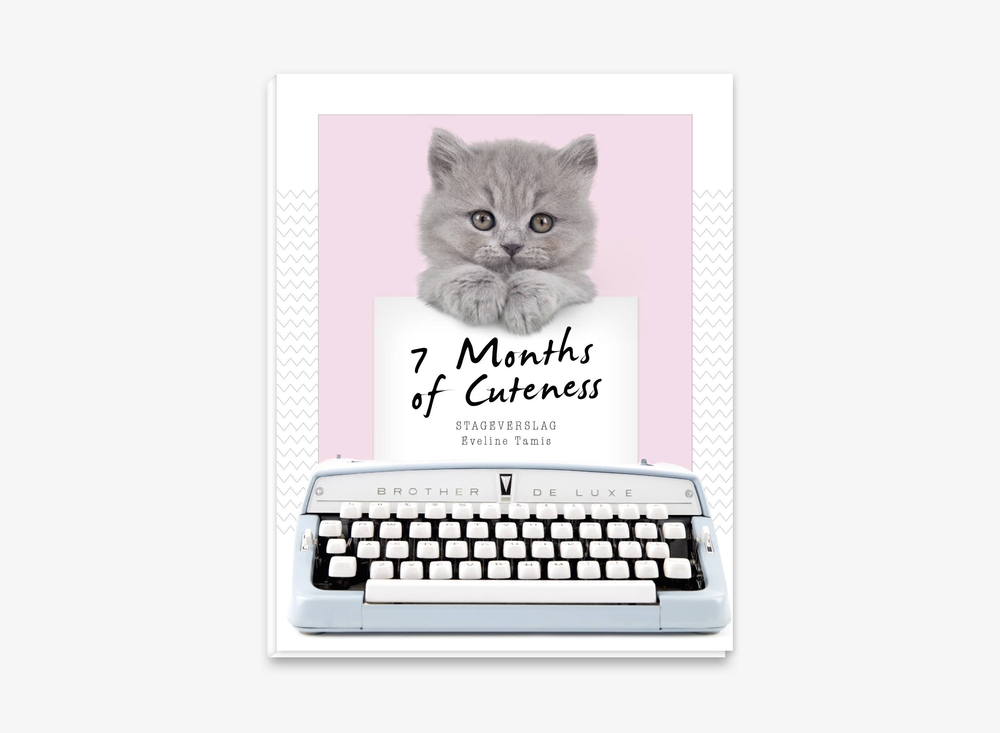
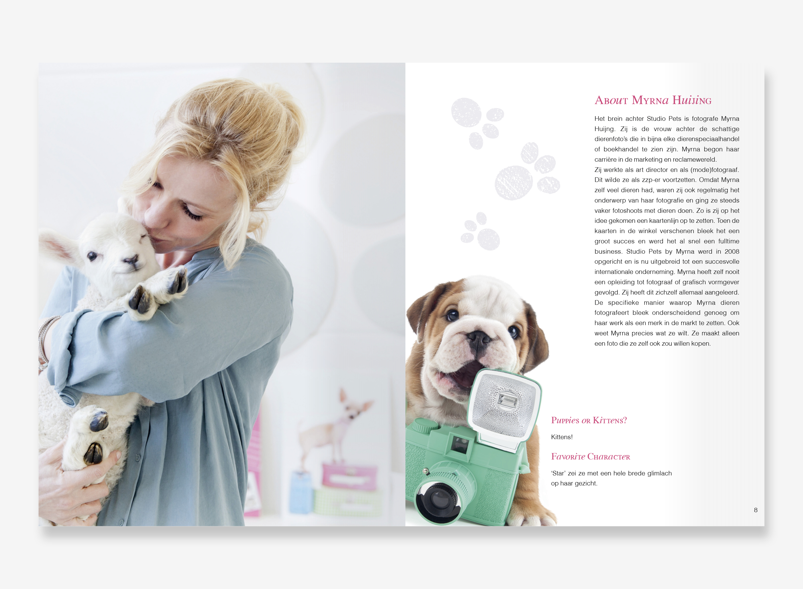
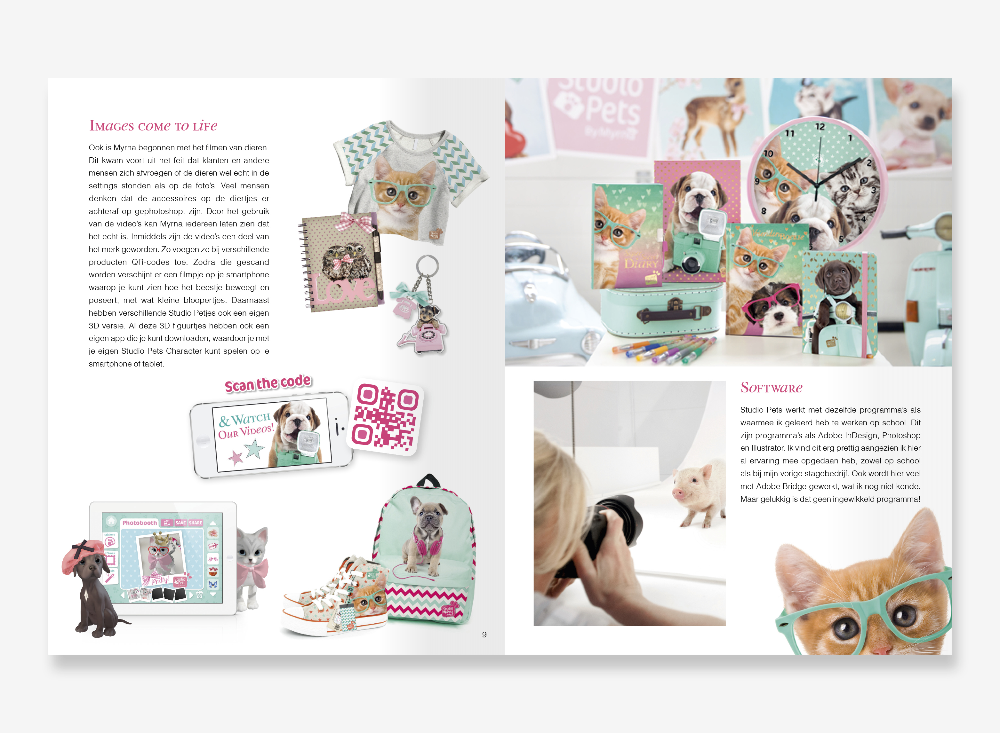
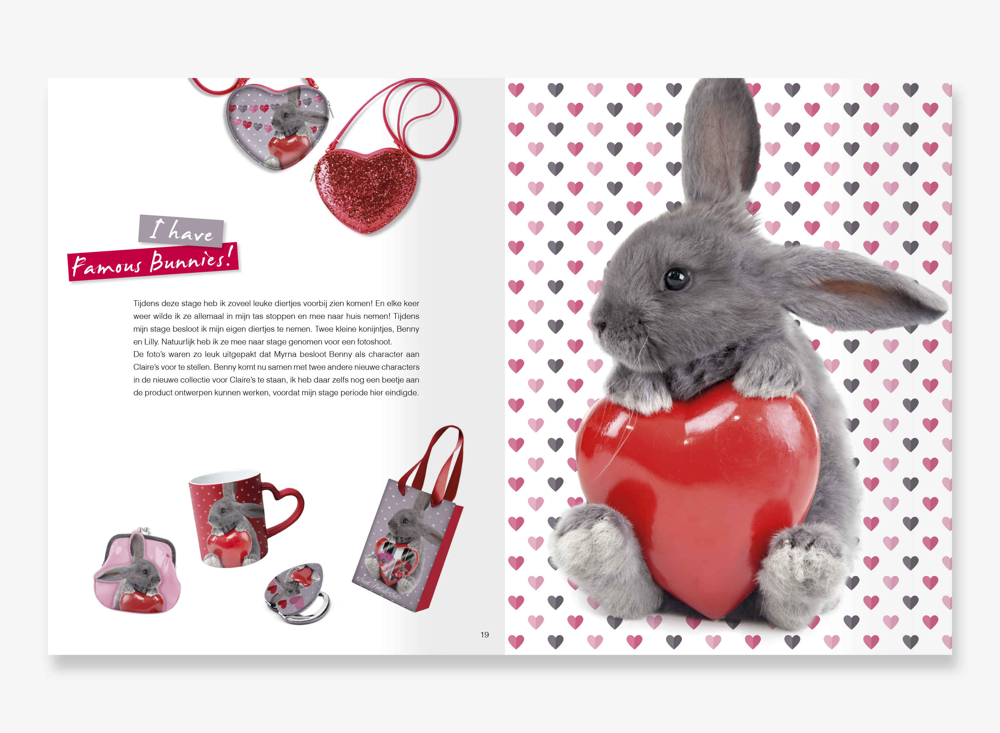

Stageverslag Studio Pets
September - November 2015
Dit is een deel uit mijn stageverslag. Het gaat over mijn stage bij Studio Pets by Myrna.
Ik heb tijdens mijn stage bij Studio Pets by Myrna aan veel leuke dingen mogen werken. Ik heb leuke accessoires mogen ontwerpen voor grote merken zoals Claires en Interstat. Voorbeelden hiervan staan ook in mijn portfolio. Ook heb ik meegewerkt aan producten zoals kaarten, mokken, stickers en posters. Ik heb mij tijdens deze stage erg kunnen ontwikkelen in de Adobe programma’s Photoshop en Illustrator. Ook heb ik hier ervaring opgedaan met fotografie.